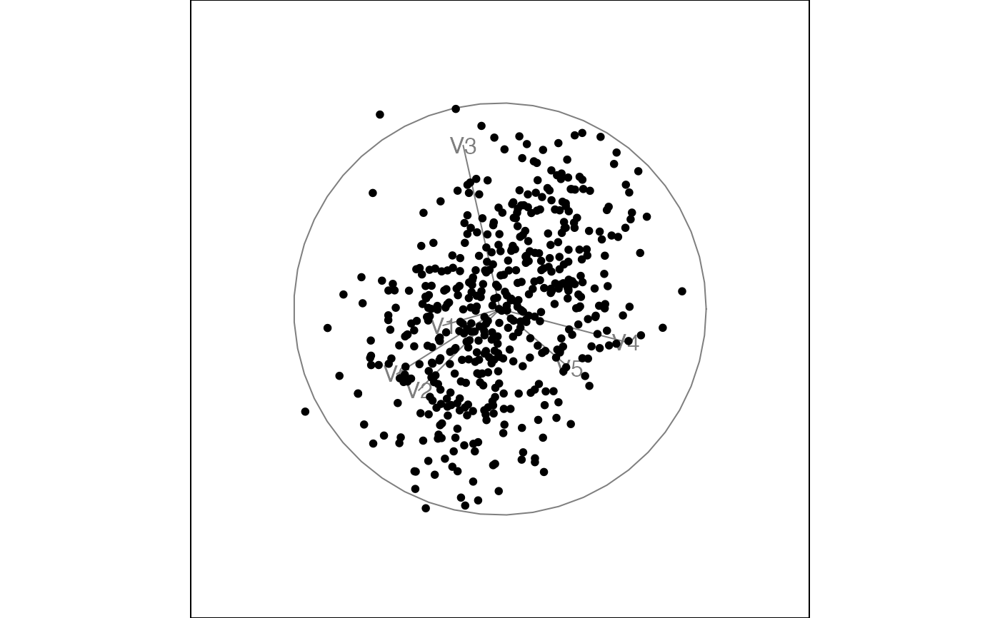

Create a guided tour with Givens interpolation
Usage
guided_tour_givens(
index_f,
d = 2,
alpha = 0.5,
cooling = 0.99,
max.tries = 25,
max.i = Inf,
optim = "search_geodesic",
n_sample = 100,
...
)Arguments
- index_f
the index function to optimize.
- d
target dimensionality
- alpha
the initial size of the search window, in radians
- cooling
the amount the size of the search window should be adjusted by after each step
- max.tries
the maximum number of unsuccessful attempts to find a better projection before giving up
- max.i
the maximum index value, stop search if a larger value is found
- optim
character indicating the search strategy to use:
search_geodesic,search_better,search_better_random,search_polish. Default issearch_geodesic.- n_sample
number of samples to generate if
search_fissearch_polish- ...
arguments sent to the search_f
Examples
data(sine_curve)
tourr::animate_xy(sine_curve, guided_tour_givens(tourr::splines2d()), sphere=FALSE)
#> Converting input data to the required matrix format.
#> Target: 0.350, 130.1% better
#> Using half_range 1.7
